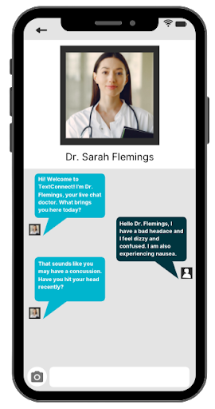
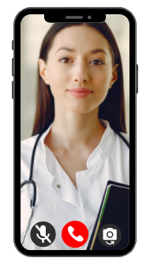

Sometimes, patients have minor medical concerns or questions that they want to address but due to the pandemic, they don’t have the time or luxury to schedule an appointment with a doctor and meet with a professional face to face.
We have doctors available 24/7 to answer any questions relating to physical or mental health. These questions can range from inquiries about minor aches or pains or scheduling/ future appointments.You will be connected with a real doctor who can use their medical knowledge to give credible advice should you need it. No need to go through the hassle of preparing to meet face to face Anything that can be achieved through a call is possible through TextConnect.
Some of our patients find it easier to verbally communicate their minor medical concerns to our doctors and we agreed. We created CallConnect so that anyone who needs to communicate with their doctor can do it without the need for texting or video. With almost no wait time, our doctors can help you without the hassle of coming to the doctor’s office.
Chat with a certified physician to take care of all your needs. This service allows you to receive verbal diagnoses and ask your doctor any questions, without the hassle of a waiting room. We have a 24/7 call service for any patient so that you can talk with a doctor about any minor health issue or concern. The phone service allows you to speak one-on-one with a medical professional without the need for a scheduled appointment. These are often used for concerns about minor injuries, colds, or mental health related issues.
During the pandemic where staying at home and social distancing play a vital role in maintaining the health and safety of the community, we want to make sure that every patient can be able to virtually access their physicians. VideoConnect allows you to schedule appointments and check-ups with your doctor while avoiding potentially infectious waiting rooms, especially for patients with pre-existing conditions.
Through VideoConnect, you can talk face-to-face with your doctor, from the comfort of your own home. Through the MedConnect platform, telemedicine has never been easier. With the best video quality available and the fastest connection on the market, VideoConnect can help you communicate with your physicians for physical and mental health concerns.
Abrasions are minor injuries that occur when the skin is scraped or torn off. It creates a shallow wound that may cause pain. The scraped layer of skin can contain germs that can lead to an infection or other complication if not cleaned and attended to.
The cause of acne is when the pores on our skin become clogged. Acne is common around puberty in the teenage and young adult years but can occur at any stage in life. Acne can consist of blackheads, blemishes, whiteheads, pimples, or zits.
Allergies are problems related to the function of the immune system. There are a wide array of allergies and symptoms vary for each, so it is important to speak with one of our physicians for correct diagnosis.
This occurs when the tissue that makes up the uterine lining grows outside of the uterus. The most common symptom of this is intense pelvic pain. Most cases are a result of hereditary or immune disorders.
Frostbite is when the skin hardens from the constriction of blood vessels in the extremities from long exposure to freezing temperatures. Those who may have frostbite need to be treated immediately to avoid risk of severe damage or need for amputation.
Gout is a rheumatic disease. The most common symptoms of gout include intense pain and swelling in the joints. Gout is likely caused by a person’s diet or a symptom of other illnesses such as obesity, hypertension, or diabetes.
Migraines are one-sided headaches that have a throbbing or pounding sensation in the head. Patients typically experience sensitivity to light or sound, nausea, and vomiting during. Common causes of migraines include stress, starvation, strong smells, and even caffeine.
Nausea is when a person feels unwell, queasy, and has the urge to vomit. There are many reasons one can experience nausea, so it is important to discuss with your physician about it. Symptoms of nausea can happen quickly or for a long time.
Symptoms of pink eye include redness in the white of the eyes, discharge from the eye, itching or burning eyes, and blurred vision. Pink eye is highly contagious and should be treated immediately.
A sinus infection occurs when the mucus membrane of the sinuses become infected and swollen or tender. Sinus infections occur when bacteria, viruses or fungi gather and breed in a person’s sinus cavity.
Common examples of yeast infection include abnormal vaginal discharge, genital itching and burning, and vaginal soreness. Some cases of yeast infection can be treated on their own while some may need medical attention
OCD stands for obsessive-compulsive disorder, and is often attributed to perfectionism. OCD is a debilitating disorder characterized by nearly impossible to control compulsions or “rituals” that someone from OCD suffers from. Oftentimes, those with OCD also end up becoming diagnosed with generalized anxiety disorder.
Chronic excessive worry about everyday activities, always expecting the worst to happen and overthinking. However, there are physical symptoms as well, including stomachaches, headaches or nausea. In order to be diagnosed with generalized anxiety disorder, symptoms must have been occurring for at least six months.
Similar to generalized anxiety, as symptoms include headache, stomachache, and nausea, and chronic excessive worry about everyday situations. However, unlike generalized anxiety disorder, with a social anxiety disorder, symptoms are usually provoked by social situations such as public speaking, crowded places, or meeting new people.
A mental condition triggered when remembering a horrific event or experience. Symptoms of PTSD, such as reliving or having flashbacks of the event or having a physical or emotional reaction to a reminder of the experience can occur weeks, months, or even years after the event. Some people will try to avoid places, people or things that remind them of the event so they do not experience negative emotions related to that terrifying incident.
When a person suffers from a panic attack(s) for either no reason or if they are under a lot of stress. Panic disorder symptoms include multiple panic attacks in which a person feels chest or stomach pain, dizziness, sweating, numb or tingly limbs, hot or cold chills or has a faster heartbeat. It is more common in women than men and tends to start in people when they become young adults, but is also seen at earlier ages.
Symptoms of depression include persistent feelings of sadness, anxiousness, emptiness, hopelessness, and helplessness. Depression can also lead to a loss of interest in activities, difficulty concentrating, sleeping, or making decisions. Physical symptoms that some may not recognize as symptoms of depression could include headaches, stomachaches, and pain that has no attribution to physical diagnosis. Thoughts of death or suicide are also attributed as symptoms of depression.
This disorder is characterized by extreme “highs and lows” in mood or energy. Being overly emotional or having mood swings does not mean that someone has bipolar disorder. Someone with bipolar disorder experiences extended periods of high mood or energy, which can often lead to recklessness or overconfidence, and experience extreme bouts of depression, with periods of normal mood and energy in between.
Type 1 Bipolar: A person with type 1 bipolar disorder experiences very high high moments called mania.
Type 2 Bipolar: A person with type 2 bipolar disorder has a cycle of depressive and hypomanic episodes.
Alzheimer’s is a progressive disease, which means it worsens over time. Alzheimer’s is the most common form of Dementia, as 60-80% of people with Dementia have Alzheimer’s. Most people with Alzheimer’s are 65 or older, but there are about 200,000 under the age of 65 who have Alzheimer’s and this is called younger-onset Alzheimer’s disease.
Parkinson’s disease is a nervous system disorder that affects movement. In Parkinson’s disease certain nerve cells in the brain gradually break down or die. Symptoms occur because of the loss of neurons that produce dopamine. When the dopamine levels decrease, it causes unusual brain activity, which leads to symptoms of Parkinson’s disease.
Anorexia nervosa is an eating disorder involving dramatic weight loss and difficulty in maintaining the proper weight for a person’s age and height. It can affect anyone and people suffering from anorexia attempt to restrict their food and calorie intake due to fear of gaining weight. Anorexia not only affects a person’s body, but their mind as well.
Bulimia is a potentially life-threatening disorder that involves a cycle of binging food and then vomiting or using laxatives to undo the binge and make up for the food they’ve eaten.
Binge eating disorder is where one will eat large amounts of food quickly and often causing discomfort. The binge eating causes the person to feel shame and/or guilt afterwards, which leads to unhealthy actions to undo the binge eating, also known as purging. When one is binge eating, they will feel a lack of control, as if they cannot stop overeating.
Body dysmorphic disorder (BDD) is a body image disorder which is characterized by consistent depressive thoughts of one’s flaws and imperfections. People with BDD can dislike any part of their body, but some likely areas are, hair, skin, nose, chest, or stomach. BDD oftenly develops in adolescents and teens, around the age of 12-13, but it also affects adult men and women almost equally, with 2.5% men and 2.2% women impacted.